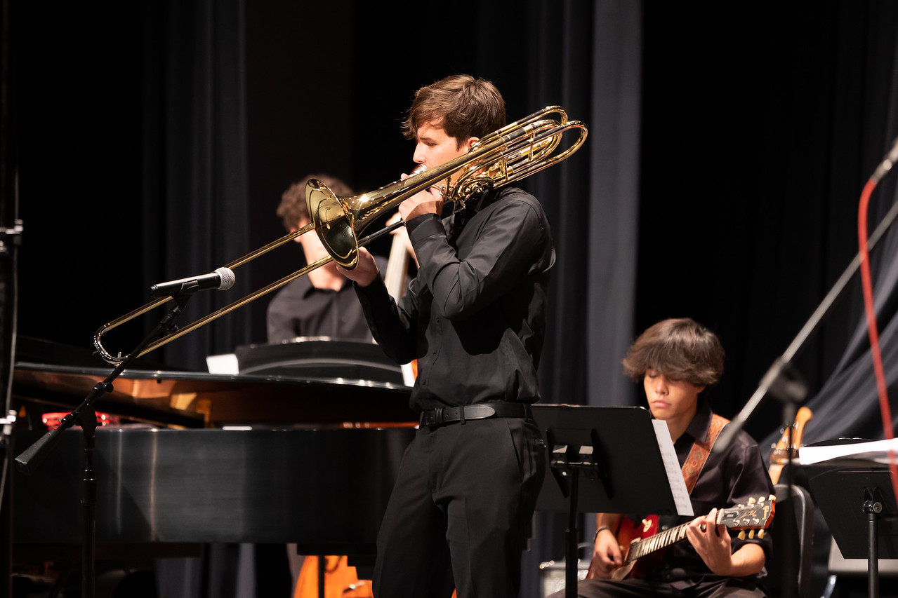
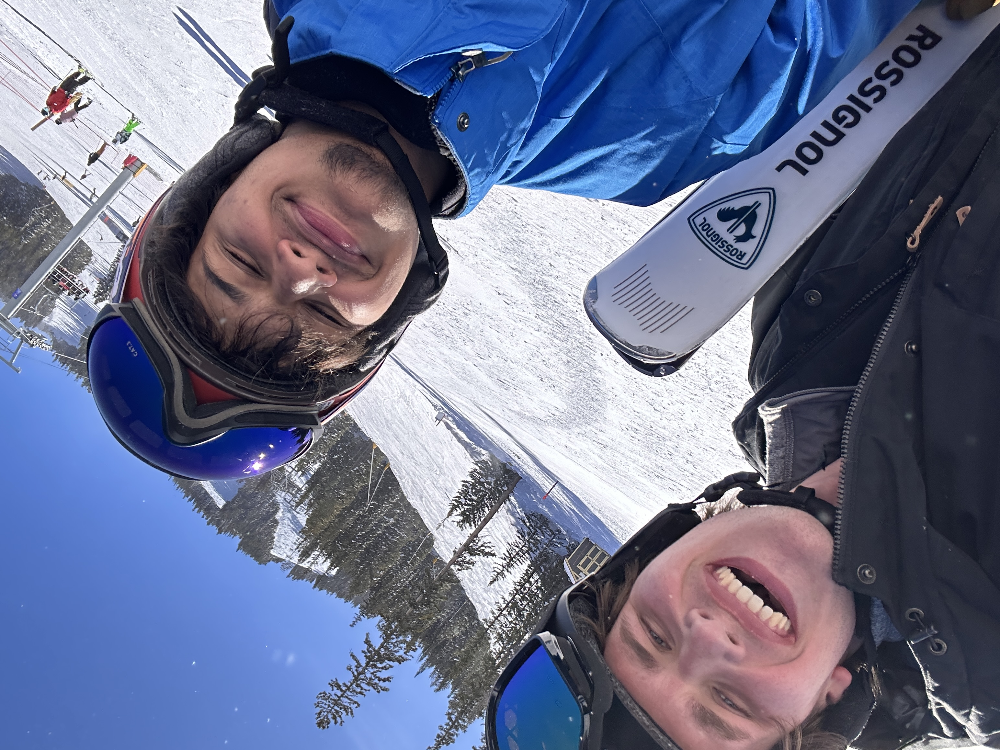

One of my favorite ways to express creativity is through music. I grew up playing trombone and piano, and have played in many different ensembles over the years incuding jazz and classical seettings. I also love electronic music, and enjoy setting time aside to attend concerts.

Having been an undergraduate at CU, I have picked up an affinity for skiing. Getting out into the mountains is one of my favorite things to do.